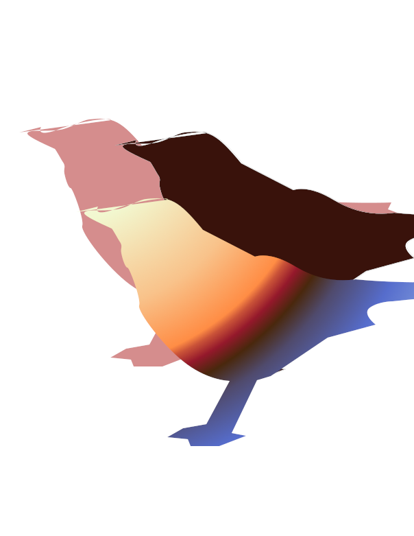

Abby Ruffier
Illustrations with Gimp
The Following Image was Created in Gimp, See Steps Below
- Uploaded Crow Image to Trace
- Used Path Tool to Trace Crow and Create a shape for reference
- I liked the look of the unedited path and chose not to edit further with the design or edit tool
- In the gradient layer, I filled in first bird with brown with the fill bucket, used the exisiting path to fill with a gradient, then repeated in pink with the fill bucket
- I finally used the move tool to arrange the colored shapes
For Educational purposes only